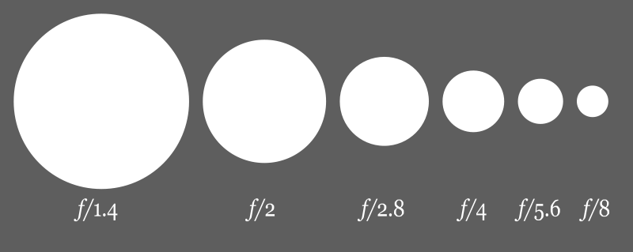
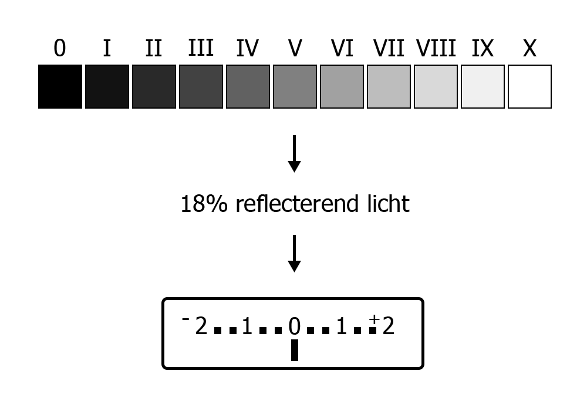
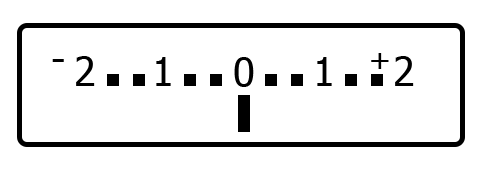

Compositie en ontwerp
Onderwerpen
- Huiswerk les 1+2
- Samenvatting les 2
- Kadering
- Ontwerp
- (Foto)grafische elementen
- Licht en kleur
- Boodschap
- Huiswerk
Huiswerk
- Maak twee foto's (in Av of A stand): 1 met zo klein mogelijke scherptediepte en 1 met een zo groot mogelijke scherptediepte.
- Optioneel: Maak 1 foto (in Tv of S stand): Probeer beweging vast te leggen.
Samenvatting les 2
Diafragma
Grootte van de lens opening.
- Elke stap wordt het licht gehalveerd = (f-)stop
- Van f/2.8 naar f/8 is 3 stops minder licht
- Van f/2.8 naar f/8 is 8x minder licht
Waarom gebruiken we diafragma?
Controle over scherptediepte
Gebruik Av / A (of M) mode.
Wat beïnvloed scherptediepte?
- Diafragma
- Brandpuntsafstand
- Afstand tot onderwerp
- Sensorgrootte van je camera
Formule voor foto met kleine scherptediepte
- Groot diafragma
- Lange (tele) lens
- Onderwerp dichtbij
Formule voor foto met grote scherptediepte
- Klein diafragma
- Korte (groothoek) lens
- Onderwerp ver weg
Sluitertijd
De tijd dat er licht op de sensor valt en het beeld wordt opgebouwd.
... 1/250, 1/125, 1/60, 1/30, 1/15, 1/8, 1/4, 1/2, 1" ...
- Elke stap wordt het licht verdubbeld = (f-)stop
- Bereik van meeste camera's: 1/4000 - 30 sec
- 1/ wordt vaak weggelaten, dus 250 = 1/250 sec.
- 1" = 1 sec
Waarom gebruiken we sluitertijd?
Controle over beweging
Gebruik Tv / S (of M) mode.
ISO
Versterken van het sensorsignaal.
100, 200, 400, 800, 1600, 3200, 6400, 12800 ...
- Elke stap wordt het licht verdubbeld = (f-)stop
- Ruis wordt ook versterkt
Waarom gebruiken we ISO?
Als aanpassingen aan diafragma/sluitertijd niet mogelijk/wenselijk zijn.
Gelijke belichting
| Diafragma | Sluitertijd | ISO |
| f/4 | 1/125 | 100 |
| f/5.6 | 1/60 | 100 |
| f/5.6 | 1/125 | 200 |
| f/5.6 | 1/250 | 400 |
Zone systeem & 18%
Belichtingscompensatie
- Exposure compensation
- Eenheid: stops of EV (Exposure value)
- Op de camera: knop met +/- teken
Soorten lichtmetingen

Kadering
Kadering
- Kader formaat & verhoudingen
- Beeldvulling & plaatsing
- Horizon
- Kader in kader
Kader formaat & verhoudingen
Beeldvulling & plaatsing
- Wat is het onderwerp?
- Hoe groot moet het overkomen?
- Waar in de foto moet het staan?
TODO voorbeelden met verschil beeldvulling en plaatsing
Gulden snede
Bron: Dicklyon, CC BY-SA 3.0
Horizon
- In hoeverre is de lucht belangrijk?
- Wel belangrijk => Veel lucht, lage horizon
- Niet belangrijk => Weinig lucht, hoge horizon
TODO voorbeelden met hoge en lage horizon
Kader in kader
TODO voorbeelden met meerdere kaders
Kader in kader
TODO voorbeelden met meerdere kaders
Ontwerp
Ontwerp
- Contrast
- Balans
- Voorgrond/achtergrond
- Ritme
- Patroon & Textuur
- Perspectief & Diepte
- Interesse & Inhoud
(Foto)grafische elementen
Licht & kleur
Boodschap
Vragen / opmerkingen / huiswerk
marcduiker@gmail.com